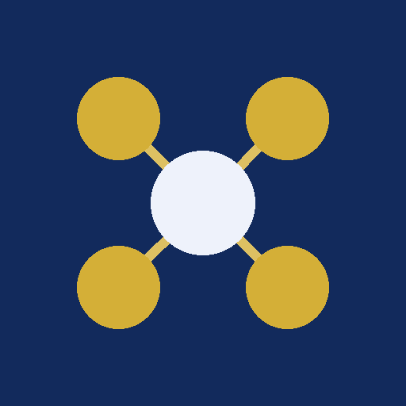

数学の全範囲を「これが分からないとこれが分からない」のつながり図として構造化しました。 参考書を渡り歩く代わりに、1つの項目を開けば、着眼点・手順・別解・東大での出方が全部そこにあります。
はじめる →冊数を減らすのではなく、入口を1つにする。各書の強い部分だけを抜き出して、1つの項目に畳み込んであります。
| 教材 | 抜き出す強み | 統合先 |
|---|---|---|
| 標準問題精講 / 精講系 | 着眼点の言語化 | 核心 |
| 1対1対応の演習 | この形にはこの一手 | 手を出すサイン |
| 青チャート / Focus Gold | 型の分類・網羅 | 手順 ＋ つながり図の網羅性 |
| やさしい理系数学 / 大数 | 別解の多さ | 別解・別視点 |
| 過去問25ヵ年 | 実際の出方 | 東大での出方（テーマ別に横断） |
左が前提、右がその上に乗る内容。分からない場所から矢印を左に辿れば、原因の項目に必ず行き着きます。
東大での必要度と「塞ぐとこの先が止まる度合い」から優先度を毎回計算し、着手できるものを3つだけ出します。50件のリストを見せません。
方針の選択・誤りの発見・値の一致の3形式。東大数学で差がつくのは計算力より方針選択なので、これで習得を判定できます。全問正解のみ合格。
各項目は半減期に従って記憶度が下がり、復習に成功するたび間隔が伸びます（1.5日→4日→10日→…）。サボると合格可能性が実際に下がります。
習得でレベルが上がり3段階に進化。記憶度が落ちると弱ってグレーになるので、放置した単元が一目で分かります。
理三・京大医・理一・地方国公立医など10校を偏差値順に並べ、数学の目標得点との差を表示します。
全項目をMarkdownとCanvasで書き出せます。グラフビューに依存構造がそのまま星図として出ます。